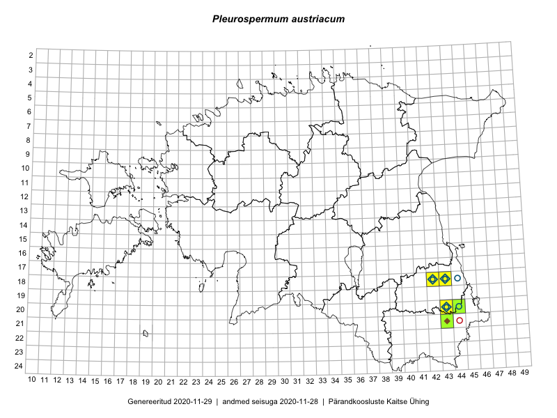

Pleurospermum austriacum
Uuendatud: 2016-12-02
Kaardile koondatud taksonid: Pleurospermum austriacum (L.) Hoffm.

Kaart põhineb 7 vaatlusel. Taksonit on leitud 2 ruudust.
Viited andmebaasikirjetele
- Meeli Mesipuu, Timo Luhamäe: 2016-06-17: 21-43: ala
- Meeli Mesipuu, Timo Luhamäe: 2016-06-17: 20-43: ala
- Meeli Mesipuu, Timo Luhamäe: 2016-06-17: 20-43: GPS punkt
- Thea Kull, Peedu Saar: 2016-08-05: 21-43: ala
- Timo Luhamäe, Meeli Mesipuu: 2016-06-17: 21-43: GPS punkt
- Timo Luhamäe, Meeli Mesipuu: 2016-06-17: 20-43: GPS punkt
- Timo Luhamäe, Meeli Mesipuu: 2016-06-17: 20-43: GPS punkt